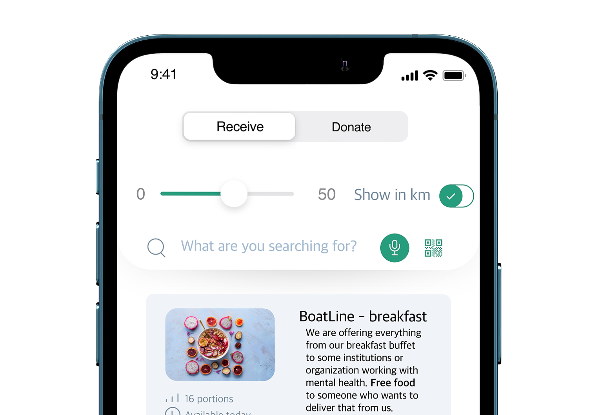
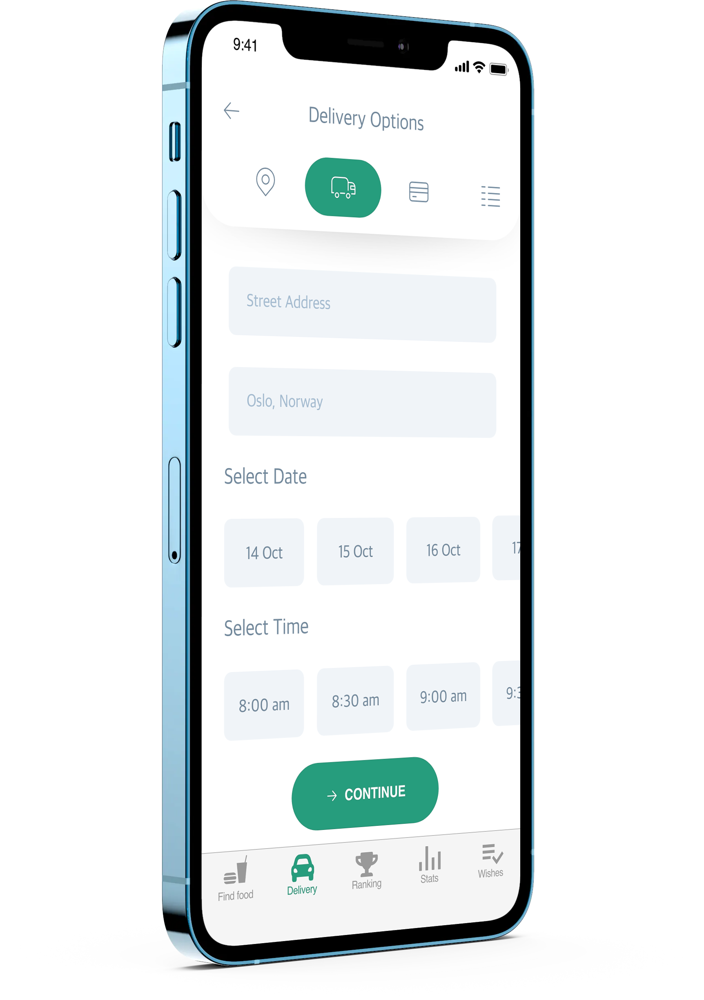
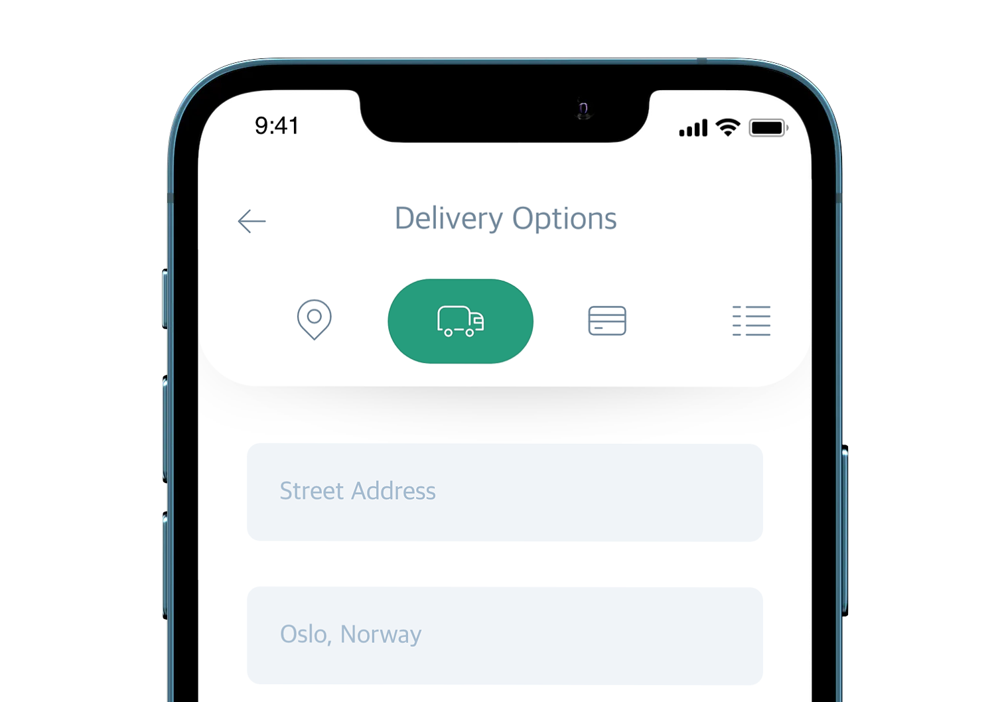

Some facts
- 1.6 billion tonnes of global food wastage
- 3.3 billion tonnes of CO2 carbon footprint
- 3.3 billion tonnes of the whole world´s agricultural area is used to produce food that is wasted
- $750 billion are a direct economic consequence of food wastage
-
Find Food
Choose a range in kilometers or miles for your food search. You can also use the audio search option or scan a QR code. From this same menu, you can navigate to the donate menu where you can choose type and amount of food you would like to donate.
 -

-

-
Delivery
Food saved by using Foodprint2030 can be either picked up on location or delivered by one of our transporters. We require all our transporters to use fossil-free methods of transportation.

-
Ranking
The best performers are ranked monthly and quarterly. For the best transporter in a given month, the prize is 1000 NOK worth of Foodprint2030 credit. For the most generous organization each quarter, the prize is a round-trip onboard Colorline’s cruise ship to Copenhagen for all employees.

-

-

-
Statistics
Keeping track of statistics makes it easier to come closer to achieving the sustainable development goals set by the United Nations.
On the picture, you can see our "foodprint" (footprint from food waste reduction) compared to Norway´s total foodprint reduction.
-
Wishes
Both private individuals and organizations can register a request for food. We need information about the delivery address, size of the group, allergies and other factors such as type of meat or gluten allergies. Delivering the right product in the right quantity to the right consumer reduces the chance of excess food being thrown out.

-

About us
UAT is a private technology University focused on educating students in advancing technology who desire to innovate for our future. Our technology infused, urban campus in Tempe, Ariz., is a technology nexus; a collection of technophiles, tech geeks and mavens of the digital world that evolve into top technology executives, master programmers, cyber warriors, forensic sleuths, robotic engineers, interactive filmmakers, and game innovators for entertainment and government animation applications.
Contact Us
Address:
2625 W. Baseline Road
Tempe, AZ 85283-1056
Main Telephone:
602-383-8228
Out of State: 877-UAT-GEEK (877-828-4335)
Fax: 602-383-8222
UAT offices are open:
Monday-Thursday from 8 a.m. to 6 p.m. (MST)
Fridays from 8 a.m. to 5 p.m. (MST).